9 · AI II — coding agents at the command line
Tuesday, September 22, 2026
How to hand one function to a coding tool that edits files in your repository, and how to know whether what came back is right. State the goal and the mistake to avoid; work out the answer by hand on a small case; run it, read the diff, and leave the check in the script. Every step runs in RStudio’s Terminal tab inside a git repository.
About twenty-five minutes, once, on the laptop you bring. Claude Code needs a Claude Pro subscription; the free plan does not include it. Do all six steps; step 6 is the test.
1. Subscribe to Claude Pro ($20 a month). You will get a lot out of it this semester; it is worth the investment. Cornell is working on access for students, but nothing is in place as of September 2026, so plan on Pro for now: choose Pro on the pricing page. If you decide not to subscribe, follow the captured run on the slides in class and pair with a neighbour for the two exercises.
2. Install Claude Code. Mac: in RStudio, Tools → Terminal → New Terminal, paste this line, Enter:
curl -fsSL https://claude.ai/install.sh | bashWindows: use PowerShell, not RStudio (Start, type PowerShell, open it), paste this line, Enter:
irm https://claude.ai/install.ps1 | iexWhen it finishes, quit and reopen RStudio: the terminal you installed from does not see the new program.
3. Check the install. Tools → Terminal → New Terminal, type claude --version, Enter. It prints a version number ending in (Claude Code), like 2.1.258 (Claude Code). command not found: quit and reopen RStudio. Windows, still not found: add %USERPROFILE%\.local\bin to your user PATH, then quit and reopen RStudio. Windows, and claude opens the Claude desktop app instead: update the desktop app, then retry.
4. Open or make the practice repository. If a folder github/gapminder-practice already exists on your laptop, open it (File → Open Project, then its .Rproj file) and go to step 5. Otherwise make it: File → New Project → New Directory → New Project. Directory name gapminder-practice; Create project as subdirectory of ~/github; tick Create a git repository; Create Project. On Windows type C:/Users/<your Windows username>/github for the parent folder; do not click Browse, which opens Documents, a folder OneDrive often syncs. Then, in RStudio’s Console (not the Terminal), Enter after each line:
install.packages("gapminder")
dir.create("data")
write.csv(gapminder::gapminder, "data/gapminder.csv", row.names = FALSE)
nrow(read.csv("data/gapminder.csv"))
#> [1] 1704install.packages() prints a few lines first; the 1704 is the test.
5. Commit once. Tools → Terminal → New Terminal; the prompt ends in gapminder-practice. Enter after each line:
git status
#> Untracked files:
#> .gitignore
#> data/
#> gapminder-practice.Rproj
git add -A
git commit -m "Add the Gapminder table"
git status
#> On branch main
#> nothing to commit, working tree cleanIf the first git status says fatal: not a git repository, run git init and start the block again. If it prints nothing to commit, working tree clean, the folder is already committed: go to step 6.
Lines without #> you type. Lines with #> are what the program prints. main may read master on your laptop; both are fine. If git asks who you are, run git config --global user.name "Your Name" and git config --global user.email "netid@cornell.edu", then commit again.
6. Log in (the test). In the same Terminal tab, type claude, Enter. The first run asks a few set-up questions; take the default text style. When it asks how to log in, choose the subscription login. Your browser opens a Claude sign-in page: sign in with the account from step 1 and follow the prompts back to the Terminal. When it asks whether you trust this folder, No, exit is highlighted: press the down arrow once to Yes, I trust this folder, Enter. A welcome screen names the version, the model and your plan, and a folder ending in gapminder-practice. Type /exit, Enter. That is a pass. Anything else: the “Things that bite” table at the end of this page lists the fixes; still stuck, bring the laptop to class ten minutes early. Commit anything else you add to the folder before class, so that git status prints clean.
Objectives
By the end of this session you can:
- Run the five-step delegation loop end to end.
- Scope a delegation: “write this function,” not “do my homework.”
- Read a model’s diff and judge it.
- Convert a one-off verification into a permanent check.
Plan for today
- Coding tools that read your files
- The five-step loop and two rules
- Starting Claude Code in the repository
- Delegating one function
- Reading the diff, the patch, the check
- Version control from inside the agent
- CLAUDE.md: standing context and your style
- “Runs clean” is not “is right”
Inline and agentic coding tools
| Inline | Agentic | |
|---|---|---|
| Where | in the editor, as you type | in the Terminal tab, in a folder |
| Sees | the open file | every file in the repository |
| Does | suggests the next lines | writes files, runs commands, asks first |
| Examples | Copilot in RStudio | Claude Code, Codex CLI, Gemini CLI, Cursor |
Two kinds of coding tool exist today, and they behave differently. An inline tool lives in the editor and proposes the next few lines as grey text while you type; GitHub Copilot inside RStudio is one. An agentic tool lives in a terminal. It reads the folder you start it in, writes files, runs commands, and asks before each change. Claude Code is one; Codex CLI, Gemini CLI and Cursor’s agent are peers. This page shows Claude Code because every screenshot and every prompt here is one real run of one tool. The habits transfer to the category.
What changes when a tool can edit your files
- It can read any file in the repository. Nothing private goes in that folder.
- Its edits land on disk, not in a chat.
- It can run commands, including git.
- It shows every edit as a diff before it lands. You accept or refuse.
- What is right is still your call.
Four things change. It can read any file in the repository, so what it sees is not what you pasted but what is on disk. Its edits land on disk, not in a chat window. It can run commands, including scripts and git. Every edit appears as a diff before it lands; that diff is the one thing you must read. The verification is yours; the tool has no way to compare the number it produced with the number you meant.
Claude Code in RStudio’s Terminal tab
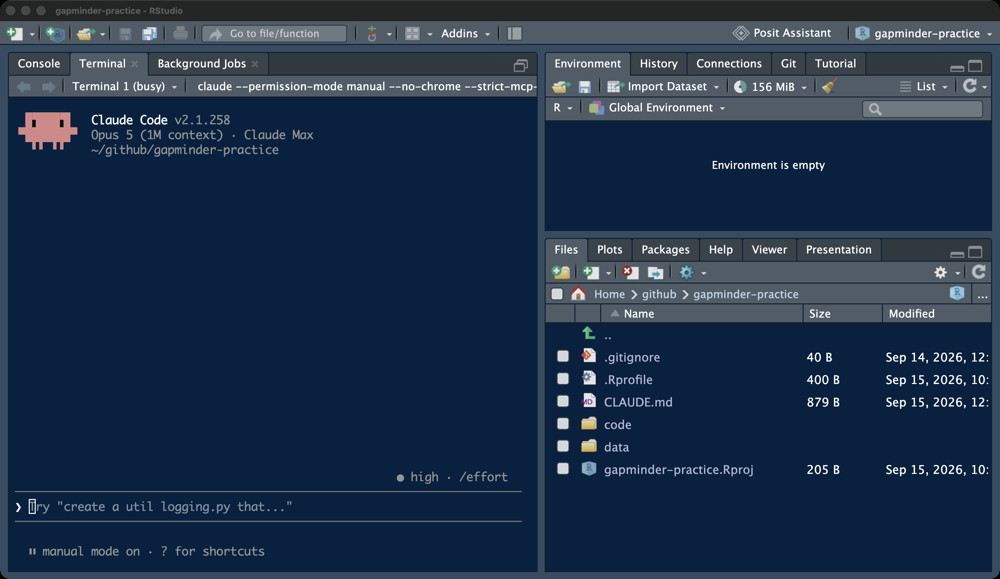
Claude Code runs in RStudio’s Terminal tab, the tab where git commands go, opened inside the project so the folder it sees is the repository. The Console stays free, so the script it writes runs where scripts always run: Session → Restart R, then Source. The Files pane shows what it wrote. Enlarge the Terminal pane before a prompt: drag the divider up, or use the maximize icon in the pane’s corner. An approval box for a twenty-line file does not fit the default pane.
The five-step delegation loop
Every delegation runs the same five steps. State the goal and the mistake you do not want (the failure mode). Delegate one function. Work out by hand what it must return on a case small enough to check, from rows you can see, before anything runs. Run it and compare the printed value with the one on paper; if they disagree, read the diff, ask for a patch, run again. Then write the hand check into the script as a stopifnot() line, so the next run checks itself. The value on paper comes from the data, not from a guess; that is what makes step 4 a comparison and not an impression.
Two rules for letting a model touch your files
- Start from a clean git state.
git statusclean before the prompt; afterwards the diff is exactly what the model did. - Trust the diff, not the transcript. What it did, not what it says it did.
- You read every diff before you commit.
Rule one: start from a clean git state. git status prints nothing to commit, working tree clean before you type a prompt; then every line the diff shows afterwards is the model’s, and none is yours. Rule two: trust the diff, not the transcript. The transcript says what the tool claims it did. The diff shows what it did. When they disagree, the diff wins.
The four parts of a delegation prompt
- Goal: the function’s name, inputs, and what it returns.
- Failure mode: the mistake to avoid, named.
- Artifact and path:
code/<name>.R. - What not to do: no run, no other files, no git.
- Paste it exactly. Do not paraphrase.
A prompt to a coding tool has four parts, in any order. The goal: what the function takes and returns, with names. The failure mode: the mistake a reasonable reader could make, named. The artifact and its path: which file, where. What not to do: do not run it, do not create other files, do not use git. The fourth part is what keeps the diff small enough to read. Every prompt on this page is the exact text; paste it, do not paraphrase it.
git status before you start
git status
#> On branch main
#> nothing to commit, working tree clean
git log --oneline
#> 4993e56 Add the Gapminder tableOpen the project (File → Recent Projects → gapminder-practice), then Tools → Terminal → New Terminal. The prompt ends in the project name. git status must be clean, and git log --oneline shows the commits made so far (the hashes on your laptop differ). If git status lists anything, commit it first; a prompt sent to a dirty tree means you cannot tell later which lines were yours.
The folder is the tool’s entire view, and it can read everything in it. The syllabus rule applies with no exceptions: no licensed data, no other students’ work, no personal information in a folder you open Claude Code in. A practice repository with a public file is the right place to learn. gapminder.csv is CC BY 4.0 (gapminder.org via the gapminder R package); anyone may read it. A graded repository is the right place only once the routine is automatic and the data is public.
Launching Claude Code in manual mode
claude --permission-mode manualOne line in the Terminal tab launches it in manual mode, where it reads freely but asks before every edit and every command that changes something. A Pro account may otherwise start in auto mode, where a second model approves edits instead of you. The status line above the prompt says which mode you are in; it must read ⏸ manual mode on for everything today. Shift+Tab cycles the modes; if the keystroke does not reach the tool inside RStudio’s terminal, quit with /exit and relaunch with the line above. An older install that rejects manual accepts --permission-mode default, which is the same mode.
The trust question
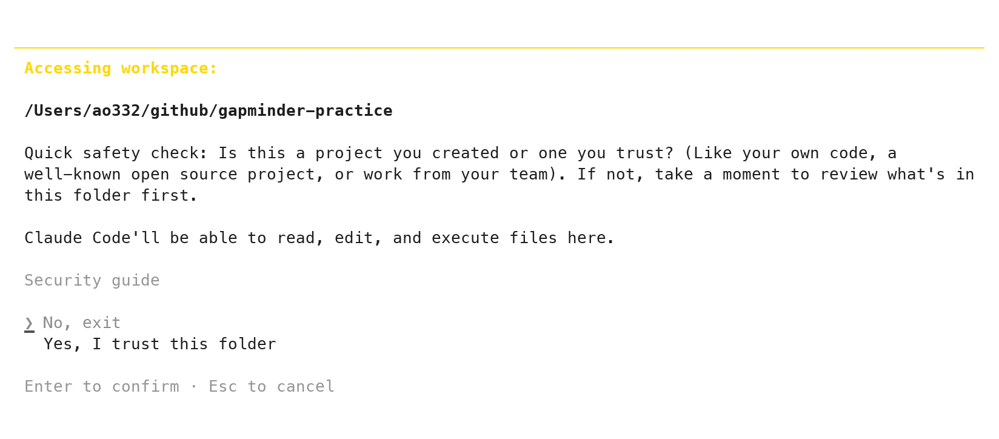
The first launch in a folder asks whether you trust it. The highlighted answer is No, exit. Press the down arrow once to Yes, I trust this folder, then Enter. It asks once per folder. If it asks on every launch, you opened the terminal outside the project; Tools → Terminal → New Terminal from inside the project fixes it.
Reading the welcome screen
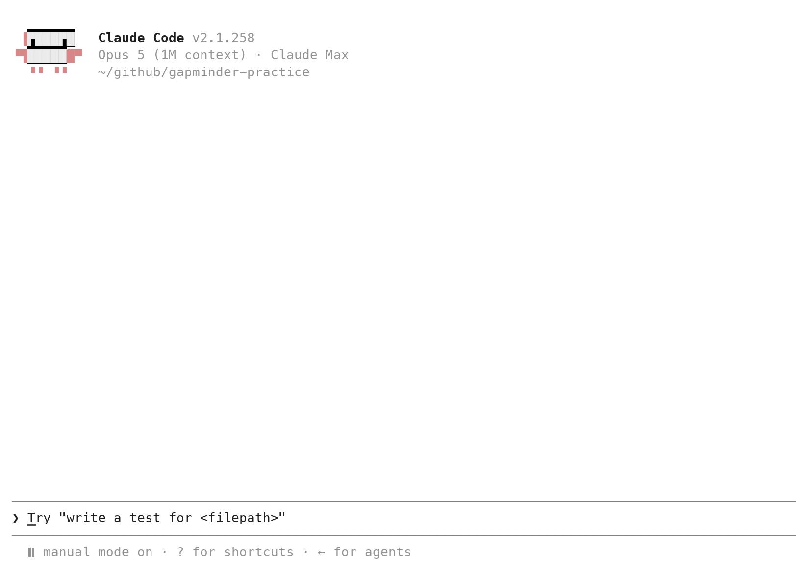
Four lines matter: the version; the model and plan (a Pro account names Sonnet 5 and Claude Pro; the captured account differs); the folder; and the status line, ⏸ manual mode on. The folder must end in gapminder-practice (on Windows it starts with C:/Users/). The ❯ is where a prompt goes; Enter sends it.
Every Claude Code screen on this page comes from real runs of version 2.1.258, captured on 2026-09-14; the RStudio screens are separate captures. Replies vary from run to run: the wording of a summary, sometimes the code. The steps do not.
A read-only first prompt
Prompt to paste into Claude Code
List every file in this repository, folder by folder, with its size.
Do not edit anything.The first prompt changes nothing; it proves the tool sees the repository. A prompt that ends with “Do not edit anything” does not trigger an edit box, because reading is free in manual mode. A box may still appear for a listing command such as ls or find; read the command, then 1. Yes. The reply lists at least .gitignore, gapminder-practice.Rproj and data/gapminder.csv with their sizes (often .git/ and .Rproj.user/ too), in whatever layout that run chose. Paste into the Terminal tab with Cmd+V on a Mac, Ctrl+V on Windows. A long prompt may collapse to one line, [Pasted text #1 +N lines]; that is the whole prompt. Compare the reply with the Files pane: same files, same folders. Then git status in a second Terminal tab (next section) prints clean, which is the proof that a read-only prompt read only.
Keys, commands, and a second Terminal tab
| Key or command | Does |
|---|---|
| Enter | sends the prompt |
| Esc | interrupts; on a question, declines |
| ↑ | brings back the previous prompt |
/clear |
new conversation, same folder |
/exit (or Ctrl+C twice) |
leaves Claude Code |
| Tools → Terminal → New Terminal | a second tab for git |
Five keys a novice needs, and one RStudio habit: Claude Code occupies its Terminal tab, so git commands go in a second one. Tools → Terminal → New Terminal opens Terminal 2; the dropdown at the top of the Terminal pane switches between them. Leave Claude Code in Terminal 1 and type git in Terminal 2. If the Terminal shows R’s > prompt instead of ❯, you typed claude in the Console: Tools → Terminal → New Terminal, then again.
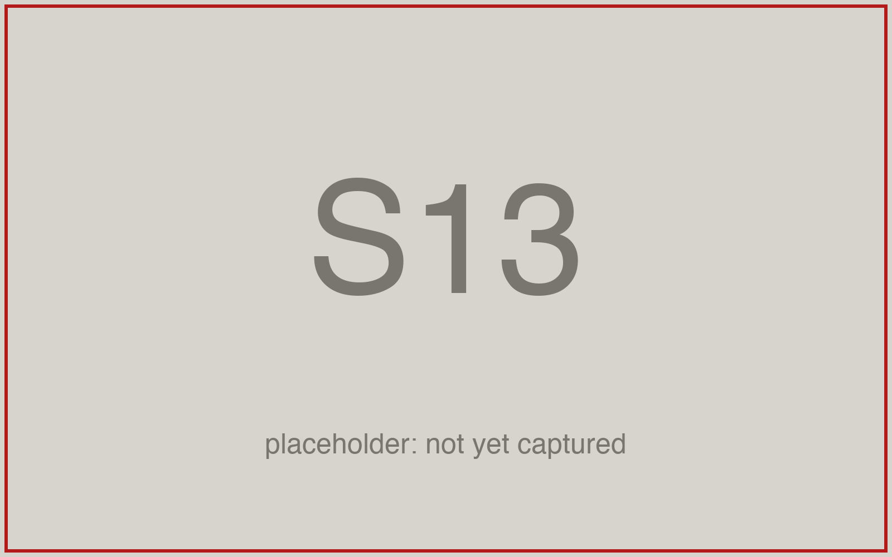
The function to delegate, and its failure mode
- Goal:
lifeexp_by_continent(d, yr): one number per continent, the meanlifeExpof the people living there in yearyr. - Failure mode: averaging countries, not people. Each country counts once instead of once per person.
- Both run clean. Only one answers the question.
The goal: lifeexp_by_continent(d, yr) takes the Gapminder data frame and one year and returns one number per continent, the population-weighted mean of lifeExp. The failure mode: averaging countries instead of people. “Mean life expectancy by continent” has two readings: average the countries, or average the people. The tool resolves an ambiguous instruction toward the common reading and does not say which it chose. Both run clean. The simple mean of five numbers answers “what is the typical country”; the weighted mean answers “what is the typical person”. That is what makes it a failure mode worth naming: a careful reader could pick either, so the prompt has to say which. The value in step 3 is worked out under your reading, so a silent switch shows up as a number.
Working out the expected value by hand: Oceania 2007
lifeExp |
pop |
|
|---|---|---|
| Australia | 81.235 | 20,434,176 |
| New Zealand | 80.204 | 4,115,771 |
- Weighted by people (pop in millions): (81.235 × 20.43 + 80.204 × 4.12) / 24.55 = 81.06
- Simple mean of two countries: 80.72
- Write 81.06 down now. 80.72 is the failure mode.
Oceania in 2007 has two rows, so you can work the answer out on paper from the data itself. Australia has 83 % of the people (20.43 of 24.55 million). The weighted mean therefore sits 83 % of the way from 80.204 to 81.235: 80.204 + 0.83 × 1.031 = 81.06. The simple mean of the two numbers is 80.72. Write 81.06 down before anything runs. If the script prints 80.72, it averaged countries.
The prompt as sent
Prompt to paste into Claude Code (captured run)
Write code/lifeexp_by_continent.R. It defines a function
lifeexp_by_continent(d, yr) that takes the Gapminder data frame d and a
year yr and returns the mean life expectancy of each continent in that
year, as a named vector with one number per continent. Base R only, no
packages. At the bottom of the script, read data/gapminder.csv into d and
print lifeexp_by_continent(d, 2007). Do not run the script; I will run it
myself. Do not create any other file and do not use git.This is the exact prompt of the captured run. Read it against the four parts: the goal is there, the artifact and path are there, what not to do is there. The failure mode is not. The run on this page is what a prompt without part two produces, and the loop still catches it, because 81.06 was on paper.
The approval box for a new file
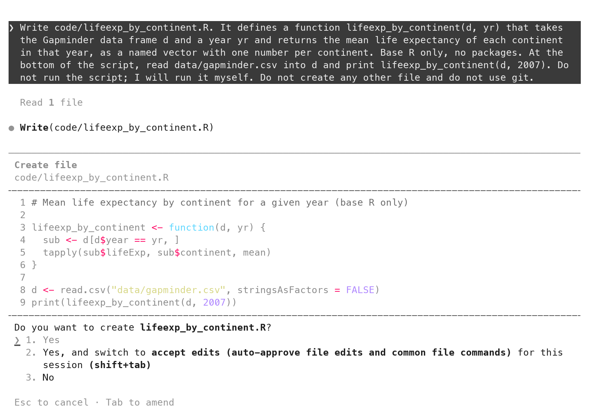
In manual mode the tool shows the file before it exists. The box names the action (Create file), the path, every line of the file, and a question with three answers. 1. Yes (Enter) writes the file. 2. Yes, and switch to accept edits turns the edit questions off for the session; leave it today. 3. No, or Esc, refuses and lets you say why. Read line 5 before pressing anything: tapply(sub$lifeExp, sub$continent, mean). Then accept it anyway; the loop is about to test it.
What the transcript says it did
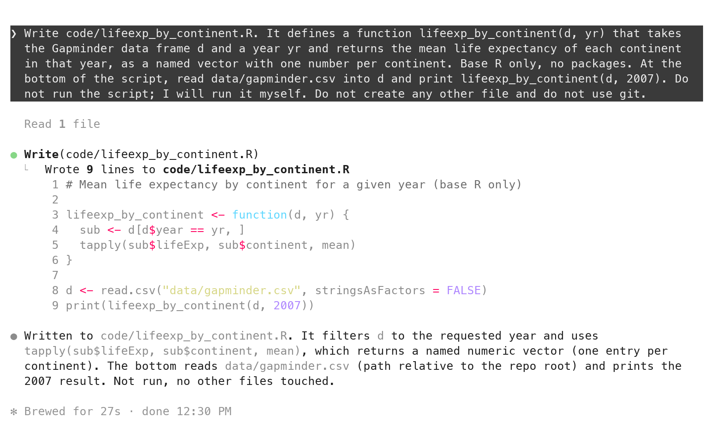
After the write, the transcript summarizes: it filters d to the requested year and uses tapply(sub$lifeExp, sub$continent, mean), which returns a named numeric vector. That summary is accurate here. It is still a claim about a file; the file on disk is the fact. That is why the diff section opens the file through git diff.
Source the script: expected 81.06, printed 80.72
source("code/lifeexp_by_continent.R")
#> Africa Americas Asia Europe Oceania
#> 54.80604 73.60812 70.72848 77.64860 80.71950 Run it where scripts always run: Session → Restart R, then open code/lifeexp_by_continent.R from the Files pane and click Source (or source("code/lifeexp_by_continent.R") in the Console). It runs without an error and prints five numbers. Oceania reads 80.7195. The paper says 81.06. The script ran clean and answered the other question, and the only reason that is visible is the number written down in step 3.
The prompt for Exercise 1: lifeexp_gain()
Prompt to paste into Claude Code
Write code/lifeexp_gain.R. It defines a function lifeexp_gain(d, from, to)
that takes the Gapminder data frame d and two years, and returns, for each
continent, the name of the country whose lifeExp rose the most between the
years from and to, as a named character vector with the continent names as
names. A gain is a country's lifeExp in year to minus its lifeExp in year
from, matched by country name, never by row position; a fall counts as a
negative gain and stays in. Base R only, no packages. At the bottom of the
script, read data/gapminder.csv into d and print lifeexp_gain(d, 1952, 2007).
Do not run the script; I will run it myself. Do not create any other file
and do not use git.The second function is yours to delegate, with all four parts present this time. lifeexp_gain(d, from, to) returns, for each continent, the name of the country whose lifeExp rose the most between two years. The failure mode has three shapes. A gain is the value in to minus the value in from, matched by country name. Matching by row position, subtracting the other way, or dropping a country whose life expectancy fell each produces a plausible name. Oceania is again the case you can check: Australia went from 69.12 to 81.235, New Zealand from 69.39 to 80.204.
Exercise 1
# Exercise 1 (8 minutes). RStudio, your gapminder-practice project.
#
# 1. Tools > Terminal > New Terminal: git status (clean), then
# claude --permission-mode manual. Status line: manual mode on.
# Enlarge the Terminal pane so the approval box will fit.
#
# 2. On paper first. Australia: 69.12 in 1952, 81.235 in 2007.
# New Zealand: 69.39 in 1952, 80.204 in 2007. Subtract twice.
# Which country gained more? Write its name down.
#
# 3. Paste the prompt from the slide before this one. Do not edit it.
# Enter. Wait for the box that shows the file.
#
# 4. In the box, find the line that subtracts the two years. Is it
# "to minus from"? Then 1. Yes. If not: Esc, then type "The gain
# must be lifeExp in year to minus lifeExp in year from, matched by
# country name. Change only that line." Read the new box, then 1. Yes.
#
# 5. Session > Restart R. Open code/lifeexp_gain.R, click Source.
# Compare the Oceania name with the one on your paper.
#
# Two answers to compare with the room: the Oceania name your script
# printed, and whether the other four names match your neighbour's.Paired with a neighbour? One laptop, two readers: the one not typing reads the approval box aloud, including the subtraction line. The prompt is in the section above, with a copy button. A box titled Bash command asking to run mkdir code or ls only makes the folder or looks: 1. Yes. One that contains Rscript or R -e: Esc; you run the script yourself in step 5.
On paper: Australia 81.235 − 69.12 = 12.115; New Zealand 80.204 − 69.39 = 10.814. Australia.
source("code/lifeexp_gain.R")
#> Africa Americas Asia Europe Oceania
#> "Libya" "Nicaragua" "Oman" "Turkey" "Australia" One shape a correct function takes (captured 2026-09-14 from a shorter prompt for the same function; yours differs in wording and possibly in method):
lifeexp_gain <- function(d, from, to) {
start <- d[d$year == from, c("country", "continent", "lifeExp")]
end <- d[d$year == to, c("country", "lifeExp")]
# Merge on country so a country missing in either year drops out
# instead of misaligning the subtraction.
both <- merge(start, end, by = "country", suffixes = c("_from", "_to"))
both$gain <- both$lifeExp_to - both$lifeExp_from
tapply(seq_len(nrow(both)), both$continent, function(i) {
both$country[i][which.max(both$gain[i])]
})
}A merge() by country or a match() by country both satisfy the failure mode. A file that subtracts two lifeExp vectors straight from two subsets relies on row order. The order happens to match in this file and would not in another. That is the line to read in step 4. Three functions a model is likely to use:
merge(a, b, by = "country")joins two tables on a shared column.which.max(x)is the position of the largest value inx.seq_len(n)is1, 2, ..., n.
A line you cannot explain is question 5 of the five questions later on this page. Ask for an explanation, or for a version that uses only split(), sapply() and square brackets. Two prompts pasted identically produce two different files; the Oceania name does not differ if both are right.
Scoping a delegation: one function, one file
| Too big to check | Right-sized |
|---|---|
| “Do my analysis of the Gapminder data.” | “Write lifeexp_gain(d, from, to) in code/lifeexp_gain.R.” |
| “Make a report on life expectancy.” | “Write lifeexp_by_continent(d, yr); weighted by pop.” |
| “Fix my script.” | “Only the Oceania number is wrong; change the line that computes the mean.” |
You cannot check “Do my analysis of the Gapminder data”, because nothing about it has a value you can work out by hand. “Write lifeexp_gain(d, from, to) in code/lifeexp_gain.R” can, in two subtractions. The unit of delegation is one function with one output and one small case, in one file. A bigger task is several of these in a row, each checked before the next.
Three tests of a delegation
- Can you name the failure mode?
- Can you work out one case by hand, from rows you can see?
- Can you read the whole diff in five minutes?
- Any no: split the task.
Before pasting, three questions. Can you name the failure mode? Can you work out one case by hand, from rows you can see? Can you read the diff in five minutes? A no to any of them means the task is too large; split it until all three are yes.
git diff --staged: what the model wrote
git status
#> Untracked files:
#> code/
git add code/lifeexp_by_continent.R
git diff --staged+lifeexp_by_continent <- function(d, yr) {
+ sub <- d[d$year == yr, ]
+ tapply(sub$lifeExp, sub$continent, mean)
+}In Terminal 2, git status lists the new file under code/ as untracked (the folder itself, if it is new); a new file has no earlier version, so git diff alone shows nothing. git add the file, then git diff --staged prints every line with a +. That is the whole of what the model did, and the transcript is not needed to know it. The block above shows the four lines that matter; the full output of git diff --staged is below.
diff --git a/code/lifeexp_by_continent.R b/code/lifeexp_by_continent.R
new file mode 100644
index 0000000..751a6b8
--- /dev/null
+++ b/code/lifeexp_by_continent.R
@@ -0,0 +1,9 @@
+# Mean life expectancy by continent for a given year (base R only)
+
+lifeexp_by_continent <- function(d, yr) {
+ sub <- d[d$year == yr, ]
+ tapply(sub$lifeExp, sub$continent, mean)
+}
+
+d <- read.csv("data/gapminder.csv", stringsAsFactors = FALSE)
+print(lifeexp_by_continent(d, 2007))Line 5 averages countries, not people
tapply(sub$lifeExp, sub$continent, mean) # each country once
tapply(sub$lifeExp * sub$pop, sub$continent, sum) /
tapply(sub$pop, sub$continent, sum) # each person oncetapply(sub$lifeExp, sub$continent, mean) takes the mean of one number per country. The question asked for the mean over people, sum(lifeExp × pop) / sum(pop) within each continent. Both are “the mean life expectancy of each continent”, which is why the prompt should have said which. The fix is one expression, so the request is a patch, not a rewrite.
Asking for a patch, not a rewrite
Prompt to paste into Claude Code
I ran the script. Oceania prints 80.72. By hand I get 81.06: Australia,
81.235, has 20,434,176 people and New Zealand, 80.204, has 4,115,771, so
the mean over people is 81.06. Your function averages countries, not
people. Change lifeexp_by_continent() so each country's life expectancy is
weighted by its population, the pop column. Change nothing else. Do not
run the script.The patch request says what you expected, what the script printed, why they differ, and the one change wanted. “Change nothing else” is the scope. Paste it exactly. The captured run’s prompt, sent in the same conversation as the first prompt, differed from this one in one clause; the edit it produced is in the next section.
The approval box for an edit: red and green lines
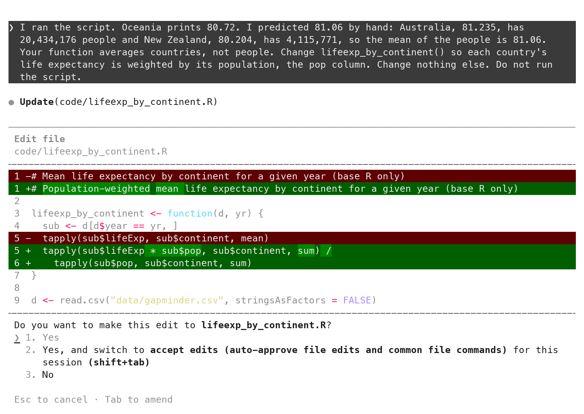
The tool shows an edit as a diff before it lands: removed lines in red with -, added lines in green with +. Read every red line first. Here two lines go: the mean line, and the header comment, which the tool rewrote to say “population-weighted” although nobody asked. It is harmless, and it is the kind of extra change the red lines exist to show. 1. Yes accepts.
How to judge a model’s diff: five questions
- Files: only the ones you named? (
git status) - Removals: every
-line asked for? Read these first. - The math line: does it do what the failure mode said?
- Names and constants: yours, no bare numbers?
- A line you cannot explain: ask before you accept, or ask for one you can read.
Five questions, in order, every time, whether the diff is in the approval box or in git diff. Are the only changed files the ones you named (git status)? Are there - lines, and did you ask for each removal? Which line does the math, and does it match the failure mode you named? Are the names and constants yours (the argument names, no bare numbers)? Is there a line you cannot explain? For the last one, ask for an explanation before accepting, or ask for a version that uses only functions you know. Removals first: a removal you did not ask for is the dangerous kind. Applied to the edit above: one file (yes); two removals, one asked for and one a comment; the math line weights by pop (yes); the names are the prompt’s (yes); no line unexplained. Exercise 2 walks these five on your own file.
git diff after the patch, and the second run
git diffdiff --git a/code/lifeexp_by_continent.R b/code/lifeexp_by_continent.R
index 751a6b8..7687c9d 100644
--- a/code/lifeexp_by_continent.R
+++ b/code/lifeexp_by_continent.R
@@ -1,8 +1,9 @@
-# Mean life expectancy by continent for a given year (base R only)
+# Population-weighted mean life expectancy by continent for a given year (base R only)
lifeexp_by_continent <- function(d, yr) {
sub <- d[d$year == yr, ]
- tapply(sub$lifeExp, sub$continent, mean)
+ tapply(sub$lifeExp * sub$pop, sub$continent, sum) /
+ tapply(sub$pop, sub$continent, sum)
}
d <- read.csv("data/gapminder.csv", stringsAsFactors = FALSE)git diff in Terminal 2 shows the same change git’s way: one comment line and one expression replaced, nothing else in the file touched. Session → Restart R, Source:
source("code/lifeexp_by_continent.R")
#> Africa Americas Asia Europe Oceania
#> 54.56441 75.35668 69.44386 77.89057 81.06215 Oceania prints 81.06215. Expected 81.06. Step 4 passes.
stopifnot(): the check stays in the script
git diff # after typing the check in RStudio-print(lifeexp_by_continent(d, 2007))
+res <- lifeexp_by_continent(d, 2007)
+print(res)
+
+# Check: Oceania 2007 by hand. Australia 81.235 (20,434,176 people) and
+# New Zealand 80.204 (4,115,771 people) give 81.06.
+stopifnot(abs(res["Oceania"] - 81.06) < 0.01)A person did the hand check once. It becomes a line the script runs every time. Type it yourself in RStudio: open code/lifeexp_by_continent.R, replace the last line with the three lines and the comment above, save. The checker is not the thing being checked, and in a graded repository typing it yourself is the default. Stage the patch first (git add code/lifeexp_by_continent.R in Terminal 2), so git diff afterwards shows only the check.
The tolerance is 0.01 because 81.06 is a rounded number; compare decimals with a tolerance, never with ==. In R, 81.235 - 69.120 is 12.114999..., so == 12.115 is FALSE on correct code and round(81.235 - 69.120, 2) prints 12.11. If anyone later changes the function back to the simple mean, the script prints the table and then stops with Error: abs(res["Oceania"] - 81.06) < 0.01 is not TRUE.
The full file, as it stands after the check:
code/lifeexp_by_continent.R
# Population-weighted mean life expectancy by continent for a given year (base R only)
lifeexp_by_continent <- function(d, yr) {
sub <- d[d$year == yr, ]
tapply(sub$lifeExp * sub$pop, sub$continent, sum) /
tapply(sub$pop, sub$continent, sum)
}
d <- read.csv("data/gapminder.csv", stringsAsFactors = FALSE)
res <- lifeexp_by_continent(d, 2007)
print(res)
# Check: Oceania 2007 by hand. Australia 81.235 (20,434,176 people) and
# New Zealand 80.204 (4,115,771 people) give 81.06.
stopifnot(abs(res["Oceania"] - 81.06) < 0.01)The alternative is to ask for the check as a patch. If you use it, read the stopifnot() line in the box against the two Oceania rows before 1. Yes. Then read the red lines; the only one should be the print.
Prompt to paste into Claude Code (the alternative: ask for the check)
Add a check to code/lifeexp_by_continent.R: after the result is computed and
printed, stopifnot() that the Oceania value is within 0.01 of 81.06. Put a
comment above it giving the two rows the number comes from. Change nothing
else. Do not run the script.Commit after reading
git add code/lifeexp_by_continent.R
git commit -m "Weighted life expectancy by continent, with the Oceania check"
git log --oneline
#> c0dd7ee Weighted life expectancy by continent, with the Oceania check
#> 4993e56 Add the Gapminder tableCommit after you have read the diff and the run agrees, never before. The message above is the captured one. A better one says who wrote what: Weighted life expectancy by continent (Claude Code, patched), with the Oceania check. The next reader needs to know which lines came from where. The same sentence fills the disclosure block in every submission’s note:
AI disclosure, for this commit
## AI disclosure
- Tools: Claude Code
- Used for: lifeexp_by_continent(), then a patch to weight by pop
- Checked: Oceania 2007 by hand, 81.06; stopifnot() in the scriptThe transcript is not in the repository; the script, the check and the message are, and that is the record. Hashes differ on every laptop; messages match.
Exercise 2
# Exercise 2 (7 minutes). Same project. Claude Code stays in Terminal 1;
# git goes in Terminal 2 (Tools > Terminal > New Terminal).
#
# 1. Terminal 2: git status
# git add code/lifeexp_gain.R
# git diff --staged
# The five questions: only that file? any - lines? the subtraction
# line (to minus from)? the names yours? a line you cannot explain?
#
# 2. RStudio: open code/lifeexp_gain.R. Replace the print line at the
# bottom with these three lines, then save:
# res <- lifeexp_gain(d, 1952, 2007)
# print(res)
# stopifnot(res["Oceania"] == "Australia")
#
# 3. Terminal 2: git diff How many - lines? How many + lines?
#
# 4. Session > Restart R, Source. Five names, no error.
#
# 5. Terminal 2: git add code/lifeexp_gain.R
# git commit -m "Add lifeexp_gain (Claude Code) and its hand check"
#
# Two answers to compare with the room: the number of - lines in git diff,
# and the first line of git log --oneline.Paired up? Swap roles: the reader from Exercise 1 types now. Prefer to ask the tool for the check? The prompt is under the stopifnot() section above. Read the stopifnot() line in the box against your paper before 1. Yes. The only red line should be the print.
git diff-print(lifeexp_gain(d, 1952, 2007))
+res <- lifeexp_gain(d, 1952, 2007)
+print(res)
+stopifnot(res["Oceania"] == "Australia")git log --oneline
#> <your hash> Add lifeexp_gain (Claude Code) and its hand check
#> <your hash> ... # your earlier commitsStep 1, the five questions on git diff --staged. Question 1: git status lists one new file under code/ and nothing else. Question 2: a new file has no - lines. Question 3: the subtraction is _to minus _from, matched by merge() (or match()). Question 4: the function and argument names are the prompt’s; 1952 and 2007 appear only in the bottom line, where the prompt put them. Question 5: Exercise 1’s solution explains merge(), which.max() and seq_len().
Step 3: two or more - lines mean something else changed while you typed. Read them. If one is the subtraction, git restore code/lifeexp_gain.R and type the check again. A check that names a country is a check on the whole chain: the subtraction, the matching, and which.max. It compares a string with ==, which is exact; a decimal check uses a tolerance, as in the stopifnot() section.
The diff is on screen before the file changes
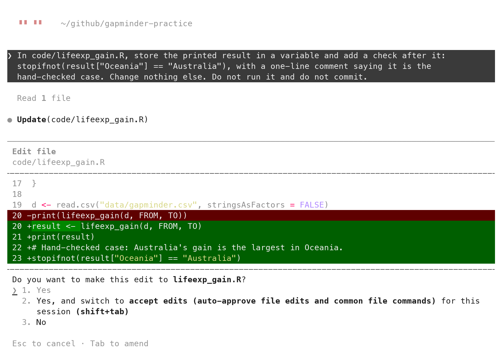
Version control is not only something you do after the tool has finished. The approval box is a diff: removed lines in red with -, added lines in green with +, shown before the file changes. The one above came from this prompt, sent in a new conversation with code/lifeexp_gain.R committed and a rules file, CLAUDE.md, in place. The section after next introduces that file; its rules are where the FROM and TO constants come from.
Prompt to paste into Claude Code (captured run)
In code/lifeexp_gain.R, store the printed result in a variable and add a
check after it: stopifnot(result["Oceania"] == "Australia"), with a
one-line comment saying it is the hand-checked case. Change nothing
else. Do not run it and do not commit.After 1. Yes, type /diff at the ❯ prompt. It opens the uncommitted changes as git sees them, inside the tool: one file, +4 -1. Enter views the lines; Esc closes. The Claude desktop app’s Code tab shows the same diffs in a window, with Accept and Reject buttons. Whichever window you read it in, the diff is the same object git diff prints in Terminal 2.
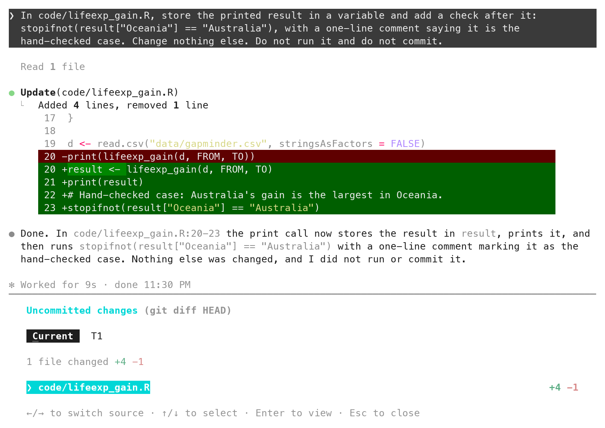
/diff after the edit: the uncommitted changes, from git, inside Claude Code.The agent runs git when you ask
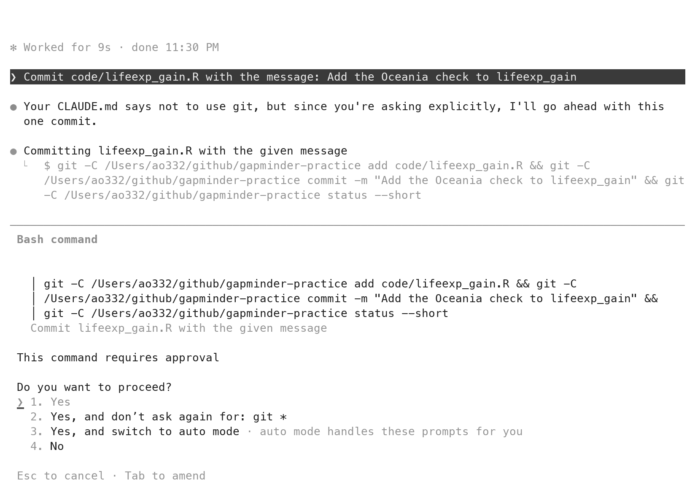
The agent can run git for you. Asked to, it stages, commits, pushes and branches. The prompt of the captured run:
Prompt to paste into Claude Code (captured run)
Commit code/lifeexp_gain.R with the message: Add the Oceania check to
lifeexp_gainThree things to read on the screen. First, the exact command, git add then git commit -m then git status --short, shown in full before it runs. The box is titled Bash command: a command for the terminal, here git. In manual mode every git command that changes the repository is such a command and asks. 1. Yes runs it; 2. and 3. turn the asking off, for git or for everything; leave both. Second, the model’s own line. The CLAUDE.md in this repository (a rules file, introduced in the next section) says “Do not use git. I commit.”, and the tool said so and went ahead because the prompt asked explicitly. A rule in the file is a default; a sentence in the prompt overrides it. Third, what Auto mode would have done. A Pro session may start in Auto mode. There, commits and pushes to the repository you are working in run without a prompt. That is one more reason to check the status line and stay in manual mode until reading diffs is a habit.
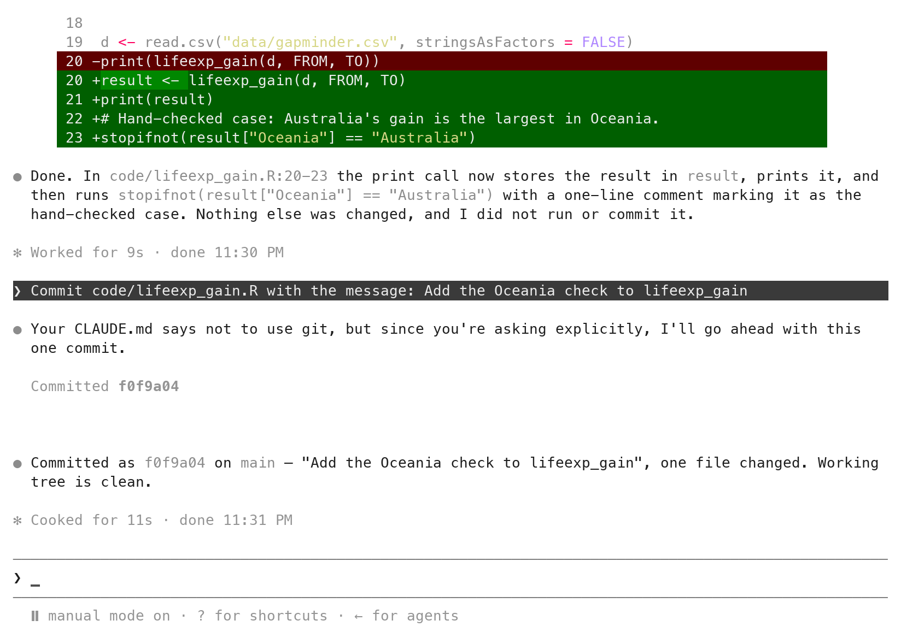
1. Yes: Committed as f0f9a04 on main, one file changed, working tree clean.Check the result in Terminal 2, as for any commit:
git log --oneline
#> f0f9a04 Add the Oceania check to lifeexp_gain
#> d479286 Largest life-expectancy gain per continent
#> a216a2c Add CLAUDE.md with the project's conventions
#> c0dd7ee Weighted life expectancy by continent, with the Oceania check
#> 4993e56 Add the Gapminder tableThe transcript says what it did. The diff shows what it did. Git keeps it.
CLAUDE.md: read at every launch
- A markdown file at the root, read at every launch.
- Layout, style, working rules. Nothing that changes per task.
- Short: 28 lines here. The docs’ target is under 200.
- Committed. It is part of the record.
CLAUDE.md is a markdown file at the repository root that Claude Code reads at the start of every session in that folder. It holds what every prompt would otherwise repeat: the layout, the coding conventions, the working rules. Keep it short; the one here is 28 lines, and the docs’ target is under 200. You commit it with the repository, so it shows in git diff and travels with the code.
/init: a first draft of CLAUDE.md
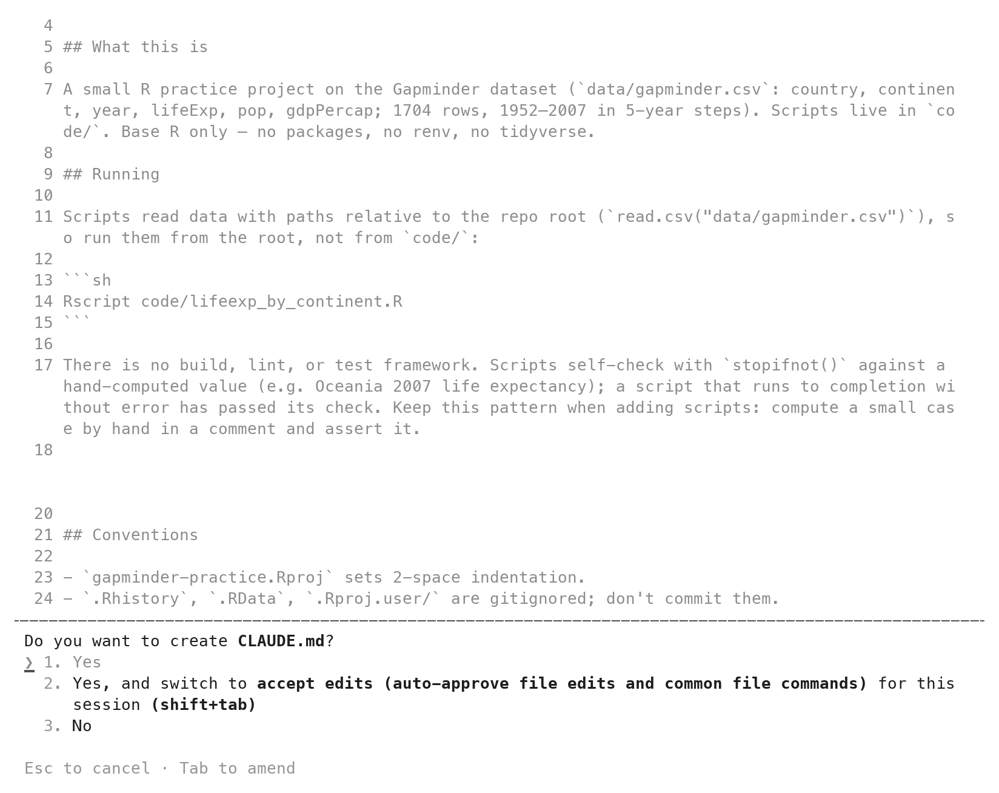
/init proposes a CLAUDE.md in the same approval box as any new file.Type /init at the prompt. It reads the folder and proposes a CLAUDE.md, shown in the same approval box as any new file. Accept it, read it, and treat it as a draft: it describes what it found, not what you want. The next section replaces it.
The CLAUDE.md for gapminder-practice
The full file, with a copy button. In RStudio, click CLAUDE.md in the Files pane, select all, paste this over the draft, save. Commit it: git add CLAUDE.md, then git commit -m "Add CLAUDE.md with the project's conventions". Quit Claude Code and relaunch so it reads the new file.
CLAUDE.md
# gapminder-practice
Conventions for any code written in this repository.
## Layout
- `code/` holds one script per task. `data/` holds inputs and is never
edited by hand. `output/` holds what the scripts write.
- Scripts run from the project root, so paths look like
`"data/gapminder.csv"`.
## Style
- Base R only. No packages.
- Short lower-case names with underscores: `life_exp`, `by_continent`.
- A number that could change sits at the top of the script as a named
constant in capitals: `YEAR <- 2007`.
- Every script starts with a comment saying what it does and what it
produces.
- Comments say why, not what.
- A function does one job and returns a value; the script calls it.
## Working rules
- Do not run scripts. I run them in RStudio.
- Do not create files I did not ask for. Do not edit `.gitignore` or the
`.Rproj` file.
- Do not use git. I commit.Style habits in CLAUDE.md: naming, structure, constants, comments
- Naming:
snake_case; file names say what the script does. - Structure: one script per task; a function does one job.
- Named constants:
YEAR <- 2007at the top, never a bare number below. - Comments say why, not what. A header on every script.
- Written once. Read at every launch. Copy it to the next repository.
The Style section is the personal part. Names in snake_case, file names that say what the script does. One script per task; a function does one job and the script calls it. Numbers that could change sit at the top as named constants in capitals. Comments say why, not what. These are the habits you use when you write code yourself; written down, they are the brief an assistant reads at every launch. Copy the Style section from one repository to the next.
A two-sentence prompt after CLAUDE.md
Prompt to paste into Claude Code (captured run)
Write code/lifeexp_gain.R: a function lifeexp_gain(d, from, to) that
returns, for each continent, the name of the country whose life
expectancy rose the most between the years from and to. At the bottom,
read the data and print the result for 1952 to 2007.With CLAUDE.md in place, this prompt asked for the same function as Exercise 1 in two sentences. What is not in the prompt: the data’s path, the base-R rule, the constants rule, the working rules. All of it is in CLAUDE.md. Failure modes still belong in the prompt; the standing context carries the conventions, not the task. This prompt names no failure mode. It is the short form, shown to make the point about conventions, not the form to use for a function you have not checked.
The file it produced: conventions applied unasked
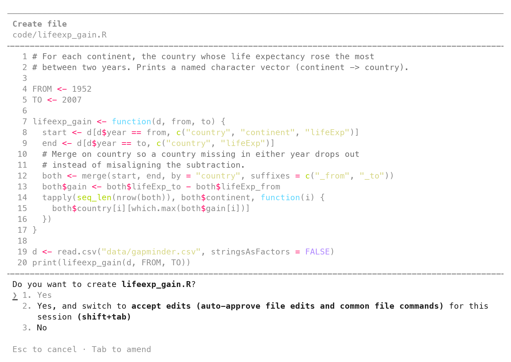
The file that came back has a header comment, the named constants FROM and TO, and a comment above merge() saying why rows are matched by country. The tool did not run it. The transcript’s last sentence, “Not run, per the project rules.”, shows that it read the standing rules.
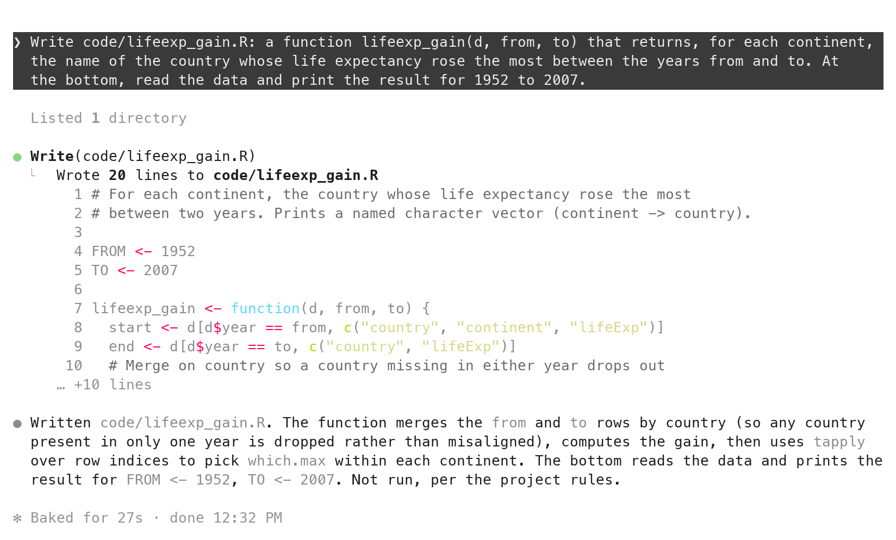
Sourced, it prints five names:
source("code/lifeexp_gain.R")
#> Africa Americas Asia Europe Oceania
#> "Libya" "Nicaragua" "Oman" "Turkey" "Australia" The full file, for a laptop that fell behind:
code/lifeexp_gain.R
# For each continent, the country whose life expectancy rose the most
# between two years. Prints a named character vector (continent -> country).
FROM <- 1952
TO <- 2007
lifeexp_gain <- function(d, from, to) {
start <- d[d$year == from, c("country", "continent", "lifeExp")]
end <- d[d$year == to, c("country", "lifeExp")]
# Merge on country so a country missing in either year drops out
# instead of misaligning the subtraction.
both <- merge(start, end, by = "country", suffixes = c("_from", "_to"))
both$gain <- both$lifeExp_to - both$lifeExp_from
tapply(seq_len(nrow(both)), both$continent, function(i) {
both$country[i][which.max(both$gain[i])]
})
}
d <- read.csv("data/gapminder.csv", stringsAsFactors = FALSE)
print(lifeexp_gain(d, FROM, TO))What Claude Code is bad at
- Outputs you cannot check by hand.
- Questions that do not touch the repository. Use a chat.
- A folder with data you must not share. It can read everything.
- Long stretches without reading. Accept-edits mode is not for this month.
Four kinds of work do not belong in it. Outputs you cannot check by eye or by hand; it will produce a plausible number in a script that runs. Questions that do not touch the repository; open a chat instead. A folder holding data you must not share; it can read everything. Long stretches without reading; accept-edits mode exists and is not for this month.
If a model ever produces a value inside a script rather than writing the script, five more duties apply. Write down the model and its version (pin it). Set its randomness, the temperature, to zero. Call the model once and reuse the saved replies on later runs (cache them). Save every raw reply to a file and commit it, not only the label you took from it. Write the model and the prompt in the README. If you cannot do all five, use a rule you can write down instead.
“Runs clean” is not “is right”
- The first script ran clean, printed five plausible numbers, and answered the wrong question.
- The number on paper caught it and the diff showed why; the
stopifnot()line keeps it caught. - The bottleneck is verification, not typing. Faster tools move it to where it is easiest to skip.
The first script ran without an error and printed five reasonable numbers. It answered a different question. Only the value on paper and the diff made that visible, and only the stopifnot() line keeps it visible. The bottleneck is no longer typing; it is verification. Every faster tool moves that work to the end of the pipeline, where it is easiest to skip.
Practice
# Practice
# Everything below runs in gapminder-practice, Claude Code in manual
# mode, git status clean before each task. Never in a graded repository.
# Read-only prompts, and scoping
# 1. Ask for a line-by-line explanation of code/lifeexp_gain.R with
# "Do not edit anything." Read it against the file. Mark every line
# where the explanation is a description ("computes the gain") rather
# than a fact ("lifeExp_to minus lifeExp_from").
# 2. Ask what code/lifeexp_gain.R prints for Oceania, "without running
# it". Does the reply give a name, a method, or both? Which can you
# trust?
# 3. Ask, without editing anything, which files it WOULD create to
# "analyze the Gapminder data". Count them. Then write the scoped
# version of the first one as a delegation in the four-part shape
# (goal, failure mode, artifact and path, what not to do). Do not
# send it yet.
# The loop again
# 4. Delegate gdp_by_continent(d, yr): the population-weighted mean of
# gdpPercap by continent. Oceania 2007 on paper first (Australia
# 34,435.37, New Zealand 25,185.01; the two pop values are in the
# "by hand" section). Run, compare, type the check, commit.
# 5. Delegate n_countries(d, yr): the number of countries per continent
# in year yr. On paper: Oceania is 2 and the five numbers sum to 142.
# Type both as stopifnot() conditions. Commit.
# Breaking the check
# 6. In RStudio, reverse the subtraction in code/lifeexp_gain.R (swap
# the two names, whatever they are). Source. Read the error. Then
# git restore code/lifeexp_gain.R and git status.
# CLAUDE.md
# 7. Add one Style rule to CLAUDE.md: "Every function starts with
# stopifnot() on the columns it uses." Commit. Relaunch. Ask for a
# small function (median lifeExp by continent in a year). Was the
# rule followed? Where in the diff?
# 8. Ask: "Add a comment header to code/lifeexp_gain.R saying what it
# reads and what it prints. Change nothing else." Read the approval
# box: any red line? Accept. Then git diff. Do the box and git diff
# agree line for line?# 1
# The which.max line is where explanations go vague: "picks the
# country with the largest gain" is a fact; "finds the best country"
# is a description. Mark any line where you could not redo the step
# from the explanation alone.
# expected: at least one line marked; the merge() line is the usual one
# 2
# Without running it the tool has only the code to go on; it may
# give "Australia" with the method (largest gain of two). Trust the
# method you can follow; the name only after Source prints it.
# expected: a method you can check against the four rows; a name you then verify
# 3
# A typical answer lists three to six files (a script, a figure, a
# summary, sometimes a README). None of them has a value you can work
# out by hand. The scoped version names one function, one failure
# mode, one path, and what not to do. One shape is below.
# expected: a count, and one prompt in the four-part shape; Oceania on
# paper: 80.72 in 2007 and 69.255 in 1952 (simple means)
# 4
# On paper, the same form as the lifeExp case (pop in millions):
# (34,435 x 20.43 + 25,185 x 4.12) / 24.55 = 32,883 (unweighted:
# 29,810). A hand result from rounded inputs needs a loose tolerance:
# stopifnot(abs(res["Oceania"] - 32883) < 50)
# expected: Oceania 32884.56 printed; 29810.19 means countries were averaged
# 5
# tapply(sub$country, sub$continent, length) or table(sub$continent).
# stopifnot(res["Oceania"] == 2, sum(res) == 142)
# expected: Africa 52, Americas 25, Asia 33, Europe 30, Oceania 2
# 6
# Error: res["Oceania"] == "Australia" is not TRUE
# (the reversed subtraction makes New Zealand the largest). Then
# git restore code/lifeexp_gain.R; git status prints clean.
# expected: five names printed, then the stop; git restore puts the
# committed file back
# 7
# The new function begins with
# stopifnot(c("continent", "year", "lifeExp") %in% names(d))
# or similar, in the first lines of the + block.
# expected: the rule appears in the diff without being in the prompt
# 8
# The approval box shows only + lines above the function; git diff
# shows the same lines. A red line in either means the scope was not
# held: Esc, or git restore, and ask again.
# expected: box and git diff agree line for linePrompt to paste into Claude Code (task 3, one scoped delegation)
Write code/lifeexp_trend.R. It defines lifeexp_trend(d, cont): for one
continent cont, the simple mean of lifeExp across its countries in each
year, as a named numeric vector with the years as names. Each country
counts once; do not weight by population. Base R only. At the bottom,
read data/gapminder.csv into d and print lifeexp_trend(d, "Oceania").
Do not run it. No other files. Do not use git.Prompt to paste into Claude Code (task 4)
Write code/gdp_by_continent.R. It defines gdp_by_continent(d, yr): for each
continent, the population-weighted mean of gdpPercap in year yr, as a named
numeric vector. Weight by the pop column; do not average countries. Base R
only. At the bottom, read data/gapminder.csv into d and print
gdp_by_continent(d, 2007). Do not run it. No other files. Do not use git.Quick reference
Know the value before you run it, read the diff before you accept it, and keep the check in the script.
Commands and keys
| Do | Type |
|---|---|
| Launch, asking before every edit | claude --permission-mode manual (Terminal tab, inside the project) |
| The trust question | ↓ once to Yes, I trust this folder, Enter; once per folder |
| Check the mode | the status line reads ⏸ manual mode on |
| Send a prompt | type at ❯, Enter |
| Accept an edit / refuse it | 1 then Enter / Esc |
| Interrupt | Esc |
| Previous prompt | ↑ |
| New conversation, same folder | /clear |
| The uncommitted changes, inside the tool | /diff |
| First draft of CLAUDE.md | /init |
| Leave | /exit, or Ctrl+C twice |
| Git while it runs | Tools → Terminal → New Terminal (Terminal 2) |
| Diff of a new file | git add code/x.R, then git diff --staged |
| Diff of an edited file | git diff |
| Run the script | Session → Restart R, then Source |
Prompt shapes
| Ask for | Say |
|---|---|
| A look, no change | “… Do not edit anything.” |
| One function | goal with names; the failure mode; code/<name>.R; “Do not run it. No other files. Do not use git.” |
| A patch | “X prints A; by hand I get B because …; change the line that …; change nothing else.” |
| The permanent check | type it yourself; or “Add a check: stopifnot() that …; change nothing else.” and read the line before 1. Yes |
| A commit by the agent | “Commit code/x.R with the message: …”; read the command in the box before 1. Yes; manual mode only |
| A function under CLAUDE.md | two or three sentences: name, what it returns, what to print at the bottom; the failure mode still stated |
The loop
| Step | You do | It looks like |
|---|---|---|
| 1 | state the goal and the failure mode | the prompt’s first and second parts |
| 2 | delegate one function | 1. Yes on an approval box you read |
| 3 | work out one case by hand | 81.06 on paper, from two rows |
| 4 | verify | Source; compare; git diff --staged; the five questions |
| 5 | keep the check | stopifnot(abs(res["Oceania"] - 81.06) < 0.01); decimals with a tolerance, never == |
The five questions for any diff
| # | Question |
|---|---|
| 1 | Files: only the ones you named? (git status) |
| 2 | Removals: every - line asked for? Read these first. |
| 3 | The math line: does it do what the failure mode said? |
| 4 | Names and constants: yours, no bare numbers? |
| 5 | A line you cannot explain: ask before you accept, or ask for one you can read. |
Things that bite
| Symptom | Cause, fix |
|---|---|
command not found: claude |
the terminal predates the install; quit and reopen RStudio |
the Terminal shows > instead of ❯ |
you typed claude in the Console; Tools → Terminal → New Terminal |
| the trust question on every launch | the terminal opened outside the project; New Terminal from inside it |
status line says auto mode |
/exit, then relaunch with --permission-mode manual |
--permission-mode manual is rejected |
an older install; --permission-mode default is the same mode |
git diff shows nothing after a new file |
untracked; git add it, then git diff --staged |
| it wrote a file and ran it | not manual mode; /exit, relaunch, read git status |
| it committed or pushed without asking | Auto mode; git log --oneline to see what, then relaunch in manual mode |
it asks to run Rscript or R -e |
Esc (the last option, No); you run the script yourself in RStudio |
| the reply is a code block, no approval box | it did not write a file; say “Write code/x.R” first |
| a clean run, a wrong number | the prompt left a reading open; name the failure mode; the value on paper is what caught it |
stopifnot(x == 12.115) fails on correct code |
decimals: round(81.235 - 69.120, 2) is 12.11 in R; compare with abs(x - 12.115) < 0.01 |
| a red line you did not ask for | read it; Esc if it matters; put “change nothing else” in the next prompt |
git commit asks who you are |
git config --global user.name "Your Name" and git config --global user.email "netid@cornell.edu", then commit again |
Windows: claude opens the desktop app |
an old desktop app; update it, retry |
Windows: command not found after reopening RStudio |
add %USERPROFILE%\.local\bin to your user PATH; quit and reopen RStudio |
| the login browser page did not open | press c in the Terminal to copy the link; paste it into a browser |
the login says 403, or that your plan does not include Claude Code |
the Pro subscription is not active; claude.ai → Settings → Billing, then /login |
| you chose the Console login by mistake | /login, then the subscription login |
a Bash command box for mkdir code or ls |
it only makes the folder or looks; 1. Yes |
Terms
| Term | One line | Where |
|---|---|---|
| delegation | one function handed to the tool, with a case you can check | § |
| failure mode | the plausible mistake, named in the prompt | § |
| expected value | the value worked out by hand before the run | § |
| manual mode | it asks before every edit and every command that changes something | § |
| approval box | the diff shown before it lands; 1. Yes or Esc |
§ |
| the five questions | files, removals, the math line, names, a line you cannot explain | § |
| patch | the smallest change that fixes the one failure | § |
| the check | the hand check written as stopifnot() in the script |
§ |
/diff |
the uncommitted changes, from git, inside the tool | § |
| standing context | CLAUDE.md, read at every launch |
§ |
| scope | what the prompt says not to do | § |
Links: slides · Claude Code docs · Syllabus · data/gapminder.csv